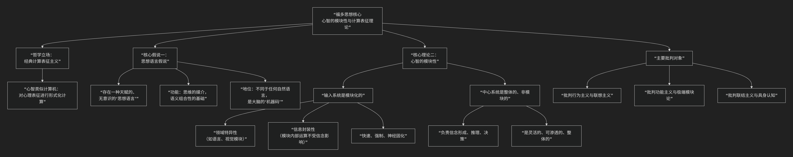

Jerry Fodor
根据杰瑞·福多（Jerry Fodor）的心灵哲学和认知科学核心思想。
杰瑞·福多是20世纪最具影响力的心灵哲学家和认知科学家之一。他的核心思想并非严格意义上的“语言学”，而是 关于心智如何工作的哲学与科学理论，但其理论基石—— “思想语言假说” 和 “心智模块性” ——深刻挑战并重塑了我们对语言、思维和认知本质的理解。
其核心思想与理论架构，可以通过下图清晰地概览：

以下，我们将沿此逻辑脉络，深入解析其核心要义。
一、核心基石：思想语言假说
这是福多理论最著名、也最具争议的起点。他认为：
存在一种“思想语言”：在我们能说出的任何自然语言（如汉语、英语）之下，存在一种 天赋的、无意识的、形式化的符号系统，它是 “思维的媒介”。我们所有的思维活动（推理、计划、解决问题）都在这种语言中进行。
它解释“思想何以可能”：自然语言的句子之所以有组合性（有限的词能生成无限的句子），是因为思想语言本身具有 组合性的句法和语义。我们理解一个句子的过程，就是将其 翻译成思想语言并进行计算 的过程。
它的地位：它不同于任何后天习得的自然语言，更像是大脑硬件运行的 “机器码” 。自然语言是这种内在代码的“外壳”或表达接口。
二、核心理论：心智的模块性
在1983年的名著《心智的模块性》中，福多提出了一个极具影响力的大脑架构模型。
输入系统是模块化的：负责处理特定感官信息（如语言、视觉、听觉）的 “低级”认知系统是模块。模块的核心特征是：
领域特异性：只处理特定类型信息（语言模块只处理语言信号，不管视觉）。
信息封装性：模块内部运算快速、自动、不受中心信念系统（如知识、愿望、期待）的影响。例如，即使你知道米勒-莱尔幻觉中的两条线等长，视觉模块 仍然迫使你“看到”一长一短。
快速、强制、神经固化：它们是硬连接的、高效的、不由意识控制。
中心系统是非模块化的：负责高级认知功能（如信念形成、决策、类比推理）的 “中心系统”是整体的、非模块的。它从各模块接收信息，但处理过程是**缓慢的、渗透性的（受信念影响）、并具有“全局访问”能力**。福多认为，科学推理、创造思维等高级过程无法用模块理论解释。
三、哲学基础与批判对象
福多的理论服务于一个更宏大的哲学目标：为“心灵表征理论”和“意向性”（即心理状态关于世界的能力）提供科学基础。
核心立场：经典计算表征主义。心智之于大脑，如同软件之于硬件；思维是对具有句法和语义的心理表征进行的形式化计算过程。
主要批判对象：
行为主义与联想主义：认为思维只是刺激-反应联结或观念联想。
功能主义（某些版本）与极端模块论：他反对将整个心智（包括中心系统）都视为模块集合的观点。
联结主义与具身认知：他一生都在激烈批评联结主义神经网络模型，认为其无法解释思想的**系统性、生产性和组合性**，也反对具身认知将思维过度还原为身体体验。
四、与乔姆斯基语言学的关联与区别
维度 |
乔姆斯基的生成语言学 |
福多的思想 |
|---|---|---|
共同点 |
坚持 天赋论 和 理性主义；认为语言能力是心智中一个 专门的子系统；都强调形式的 组合性。 |
|
核心对象 |
自然语言 的语法结构（句法）。 |
所有思维的基础媒介—— 思想语言。 |
理论目标 |
解释人类 语言知识 的本质。 |
解释人类 思维和认知 的本质。 |
关系 |
福多将乔姆斯基的“普遍语法”视为思想语言在 语言模块 中的具体体现。语言模块是思想语言的一个专门化的输入/输出接口。 |
总结
总而言之，福多的核心思想描绘了一幅 经典认知科学的标准图景：心智是一个由 模块化的输入系统 和 非模块化的中心推理系统 组成的 计算装置，这个装置使用一种天赋的 思想语言 作为其内部代码来运行。
尽管他的许多具体主张（如严格的模块封装性、思想语言的实在性）备受争议，并被后来的认知神经科学和具身认知思潮所修正，但他提出的根本问题——思维如何表征世界？心智功能是否模块化？——以及他论证的严谨性和彻底性，使他成为任何研究心智、语言与认知的学者都无法绕过的思想巨擘。他的工作为心灵哲学和认知科学划定了基础性的辩论战场。